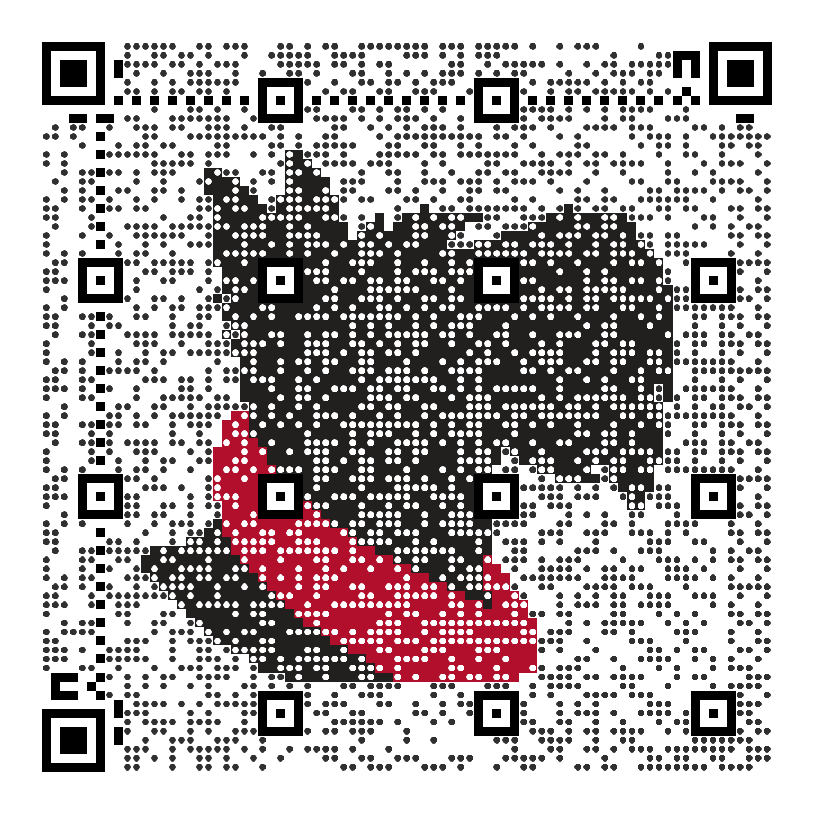

QR Codes With a Little More Bite
Make a QR code with Carnegie Mellon character, from a Scotty portrait to Wean Hall's turtle eating a Cheeto. Download it for a poster or slide, or put its address in an image tag.

Get Started
Each QR code comes two ways: as an image to download, or as an address to use in a page. Download an SVG for print, since it stays sharp at any size, or a PNG for slides, email and documents. To show the code on a web page, put its address in an image tag:
<img src="https://qrnegie.andrew.cmu.edu/qr.svg?text=https%3A%2F%2Fwww.cmu.edu%2F&style=mosaic&size=1024" alt="QR code for www.cmu.edu">The address holds the text to encode, the style and the size in pixels, so changing
any of them gives you a new code. For a PNG, use /qr.png in place of
/qr.svg.
- QRnegie encodes your text exactly as you type it. Nothing is added in between, such as a redirect or tracking, so a code you print keeps working on its own.
- Each image includes a white border around the code. Scanners use it to find where the code begins, so keep it when you place or crop the image.
- Each style is checked by scanning finished codes, but it's still worth scanning yours with a phone, at the size you'll use, before it goes out.
Set Up With an AI Agent
Copy the prompt into an AI coding agent in your editor or terminal, and it sets up QRnegie for your project.
Want to read it first? See the PromptHide the Prompt
Use QRnegie for QR codes in this project. Read https://qrnegie.andrew.cmu.edu/options.html first. If you can connect MCP servers, add https://qrnegie.andrew.cmu.edu/mcp and use its get_guide and generate_qr tools. Choose Scotty (Mosaic), Scotty (Simple), Kraus Campo, Wean Hall, Binary Heart, Tilted Square or Basic Black to suit the page, at 1024 pixels for the artistic styles. Save the SVG or PNG with the project, or use its image address. Keep the code square with its white margin, and write alt text that says where the code goes.